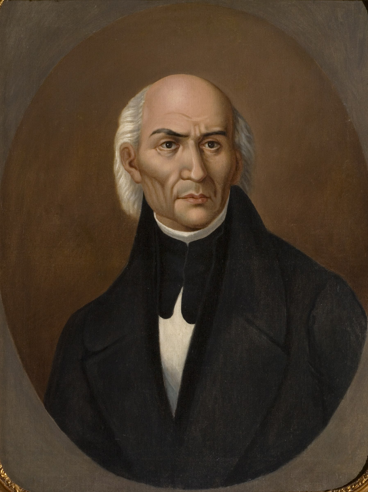

PERSONAJES
LOS ROSTROS Y MENTES DETRÁS DE LA CAUSA INDEPENDENTISTA

Miguel Hidalgo
Padre de la Patria
Iniciador del movimiento insurgente con el célebre Grito de Dolores y líder de la primera etapa del movimiento.

Josefa Ortiz
La Corregidora
Pieza clave en la Conspiración de Querétaro; arriesgó su vida para avisar que la causa había sido descubierta.

Jose Maria Morelos
Siervo de la Nación
Gran estratega militar de la Independencia y autor de "Sentimientos de la Nación", documento base de nuestra soberanía.

Vicente Guerrero
Consumador de la Causa
General que mantuvo viva la llama insurgente en el sur y pactó el fin de la guerra. Inmortalizó la frase: "La patria es primero".